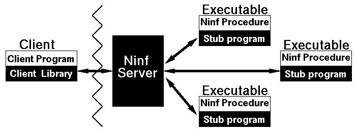

 <center> <H1>  Ninfの基本構造  </H1> </center> <hr noshade width = 80% algn = "center"> <H2>

<LI> クライアントライブラリ <p>
<LI> Ninf サーバ<p>
<LI> スタブ ＋ 計算ルーチン<p>
<center>

</center>
 <hr> <center><table><td><h2>　　　　　　　　　　　　　　　</td><td></td><td></td><td><h2><em>　　　　　　　HOKKE' 96 </td></table></center>


